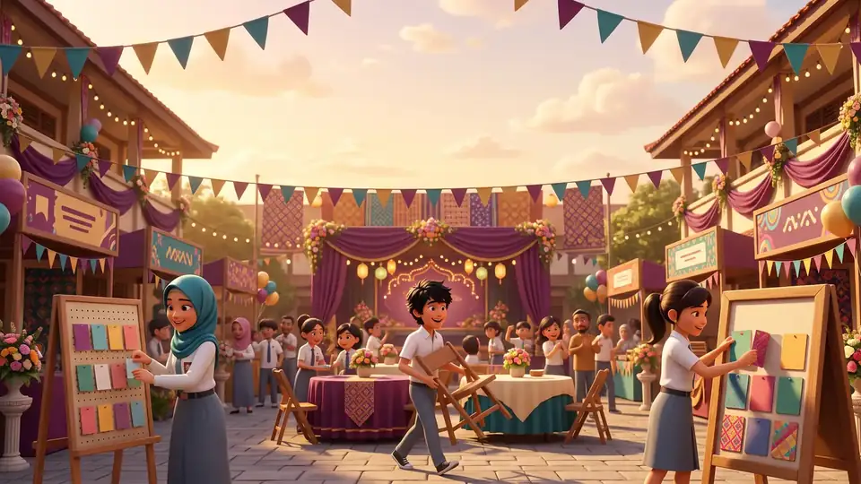
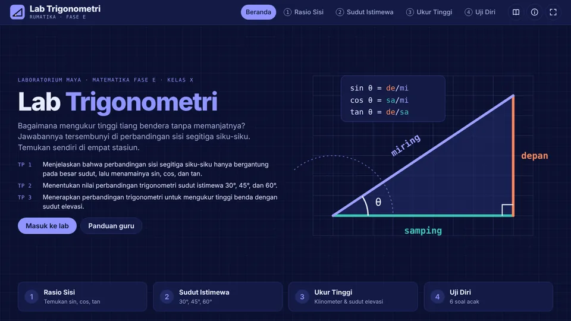
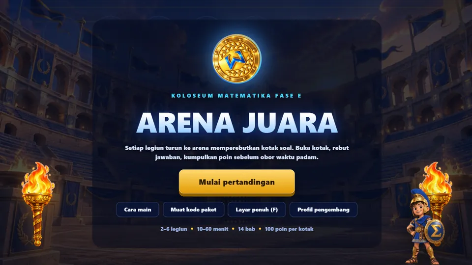

Artikel
Bacaan singkat untuk guru dan siswa
Penjelasan konsep yang bisa dibaca siswa, dan tips mengajar dari kelas yang sebenarnya. Setiap artikel menautkan ke karya Rumatika untuk latihan lanjutan.
4 artikel

ArtikelPermutasi atau Kombinasi? Satu Pertanyaan untuk Memilih Rumus yang Tepat
Banyak siswa hafal rumus permutasi dan kombinasi, tetapi bingung kapan memakainya. Satu pertanyaan sederhana tentang urutan sudah cukup untuk memilih rumus yang benar.
Mengapa 1/2 Sama dengan 2/4? Memahami Pecahan Senilai Lewat Gambar
Pecahan senilai menjadi dasar menyederhanakan, membandingkan, dan menjumlahkan pecahan. Artikel ini menjelaskan konsepnya dengan gambar dan memberi urutan kegiatan yang bisa dipakai di kelas atau di rumah.

ArtikelMengukur Tinggi Tiang Bendera dengan Klinometer dan Sudut Elevasi
Trigonometri terasa nyata ketika siswa memakainya untuk mengukur benda di sekolah. Panduan ini menjelaskan cara membuat klinometer sederhana, mengambil data, dan menghitung tinggi tiang bendera dengan tangen.

ArtikelMemakai Gim Edukasi di Kelas Tanpa Kehilangan Arah Belajar
Gim edukasi bisa membuat kelas hidup, tetapi juga bisa berakhir sebagai hiburan semata. Pola buka, main, dan refleksi membantu guru menjaga agar setiap permainan tetap mengarah ke tujuan pembelajaran.
Belum ada artikel yang cocok
Pilih "Semua" pada salah satu saringan.